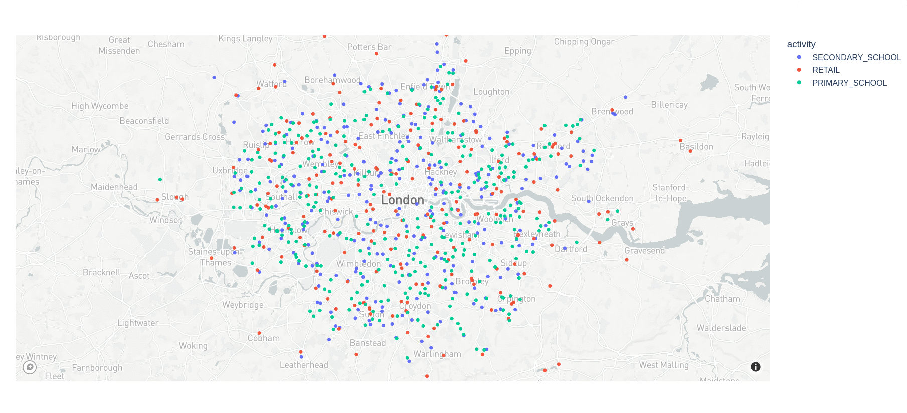

Getting started
What SPC does?
The SPC generates spatially enriched synthetic population outputs for multiple administrative and census boundaries including Local Authority Districts - LADs and Counties across England. The output file generated by SPC has a granularity of Middle Layer Super Output Areas - MSOAs. This file is estructured and convided to help other researchers or urban analysts to feed other dynamic models for multiples propouses where a enriched sythetic population file is requiered. SPC includes an comprenhenvise set of variables that include social-demogragfics characterictis, dayliy activities and other extra data sources to help you model the complexity of British society.
For information about the data sources and the varibles integrated in the SPC outfile, visit data sources. For information about the administrative and census boundaries included in SPC visit the Open Geography portal from the Office for National Statistics (ONS).
How to use SPC
Using SPC we have already created the output file for all counties in England, so if the area you want to model is listed or you just want to explore the data, no need to run SPC yourself – just download data for your area.
If you are interested in create another area or combination of MSOAs, you will need then install and run SPC in your environment. We have tested SPC in Lunix and MacOS systems, for the moment there is no support for Windows system, but we are working hard to solver that issue.
Installation
Initial Requirements
Rust: The latest version of Rust (1.60): https://www.rust-lang.org/tools/install
For Mac users, we recommend to have installed Homebrew: https://brew.sh/
Python, there are some scrips and functionalites inside SPC that requiere python. https://www.python.org/downloads/
One-time installation
git clone https://github.com/alan-turing-institute/uatk-spc/
cd uatk-spc
# The next command will take a few minutes the first time you do it, to build external dependencies
cargo build --releaseIf you get some errors during the compilation process, take a look at Troubleshooting section.
Create a new study area
Once SPC is installed and you need to create a synthetic population for a new area not listed in one of our already genereted outputs, you need to do the following two steps:
1. Adding a new study area text file in /config folder: SPC requieres a list of MSOAs for a given area. The MSOA code is not a conventional way to describe an area, so we have created a python script to assist you create the requiered input file for SPC.
Navigate to the folder scripts within SPC folder, and run python select_msoas.py, this script will ask you the name of the LAD or County you are interest in. Refer to data/raw_data/referencedata/lookUp.csv for all geographies that SPC support. A new file will be created in your config folder config/your_region.txt with the list of MSOAs.
2. Run SPC for the new area list:
After you write a new file, you simply run the pipeline with that as input, make sure you are located in the spc folder
cargo run --release -- config/your_region.txtIf you like to take a quick look of how SPC process the data, you can use one of our small examples lists (west_yorkshire_small.txt, two_counties.txt)
cargo run --release -- config/west_yorkshire_small.txtThis will download some large files the first time. You’ll wind up with data/output/west_yorkshire_small.pb as output, as well as lots of intermediate files in data/raw_data/. The next time you run this command (even on a different study area), it should go much faster.
How to work with the SPC output files
Once you run SPC to generate a new study area based on your input file text, you will get in /data/output folder a .pb file. A .pb or protocol buffer file efficiently encode the the enriched synthetic population schema. You can read the “protobuf” (shorthand for a protocol buffer file) in any supported language, and then extract and transform just the parts of the data you want.
Python
To work with SPC protobufs in Python, you need two dependencies setup:
- The protobuf library
- You can install system-wide with
pip install protobuf - Or add as a dependency to a conda, poetry, etc environment
- You can install system-wide with
- The generated Python library, synthpop_pb2.py
- You can download a copy of this file into your codebase, then
import synthpop_pb2 - You can also generate the file yourself, following the docs:
protoc --python_out=python/ synthpop.proto
- You can download a copy of this file into your codebase, then
Converting .pb file to JSON format
To interactively explore the data, viewing JSON is much easier. It shows the same structure as the protobuf, but in a human-readable text format. The example below uses a small Python script:
# Download a file
wget https://ramp0storage.blob.core.windows.net/spc-output/v1/rutland.pb.gz
# Uncompress
gunzip rutland.pb.gz
# Convert the .pb to JSON
python3 python/protobuf_to_json.py data/output/rutland.pb > rutland.json
# View the output
less rutland.jsonConverting to numpy arrays
The ASPICS project simulates the spread of COVID through a population. The code uses numpy, and this script converts the protobuf to a bunch of different numpy arrays.
Note the code doesn’t keep using classes from the generated Python code for protobufs. The protobuf is a format optimized for reading and writing; you shouldn’t use it in your model if there’s a more appropriate tool you’re familiar with, like data frames.
Visualizing the output files.
Use this script to read a protobuf file, then draws a dot for every venue, color-coded by activity.
